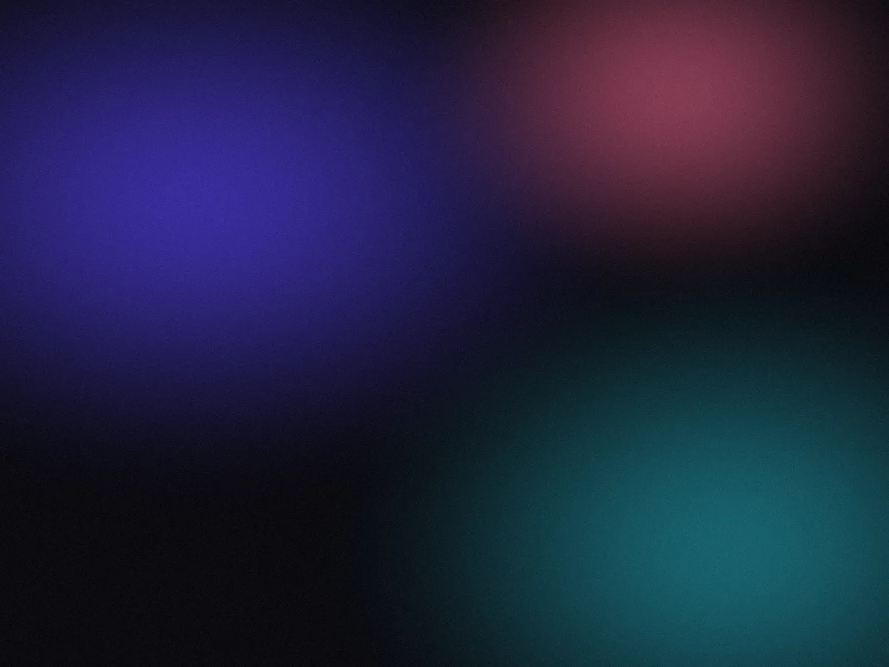
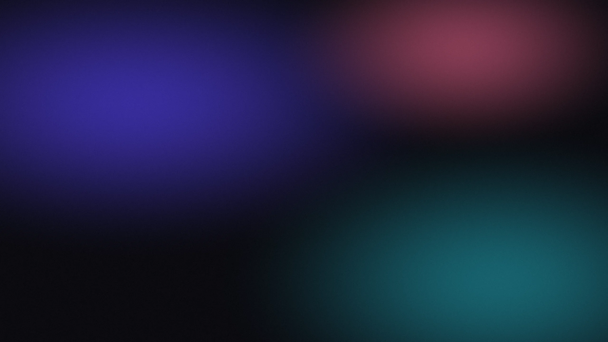
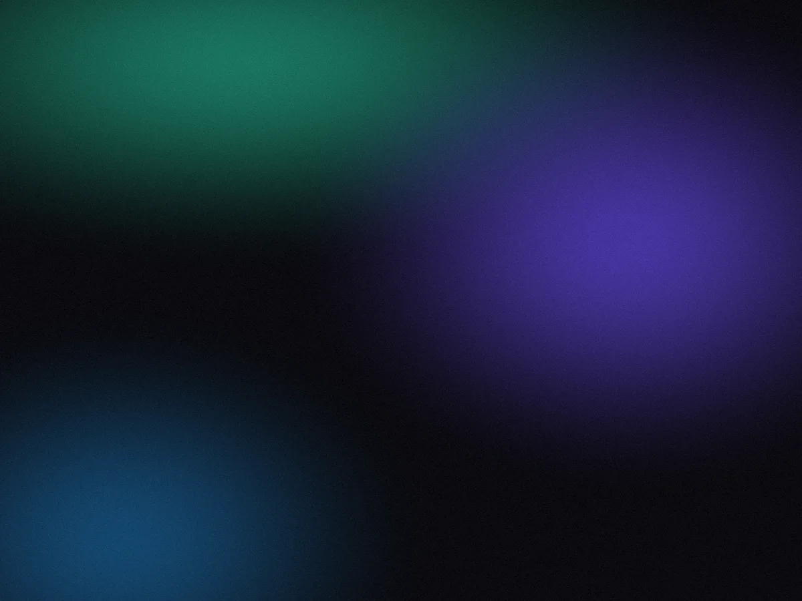
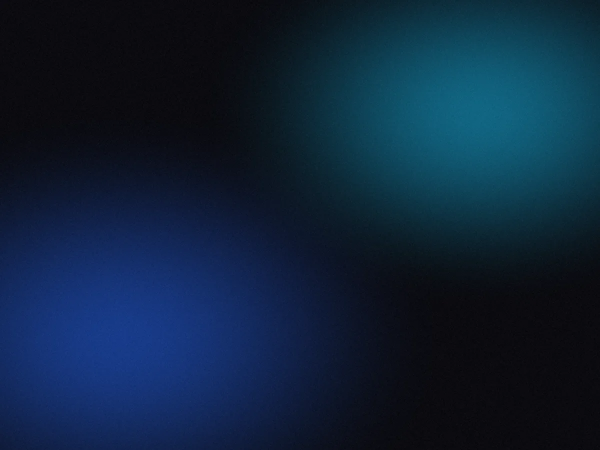
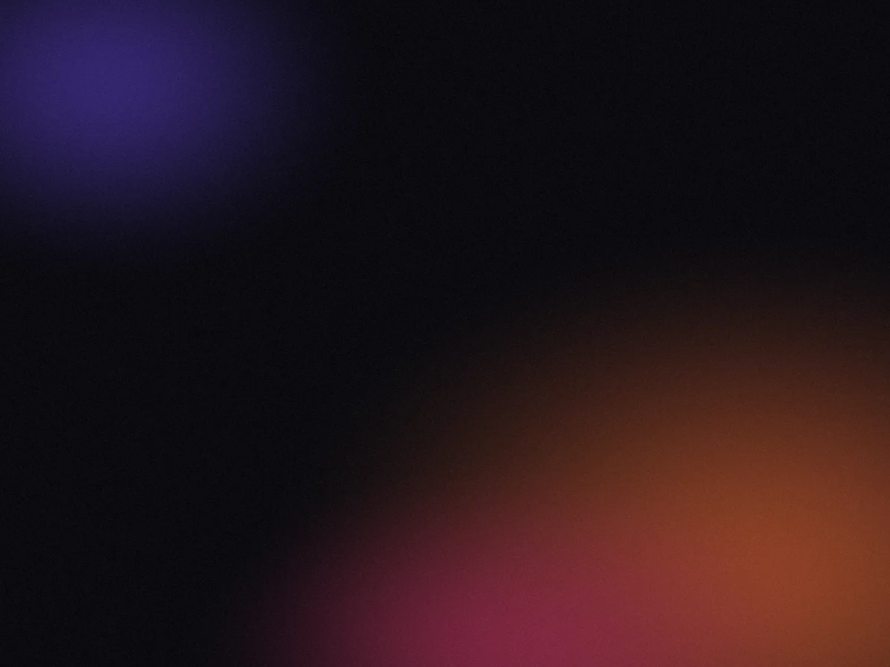
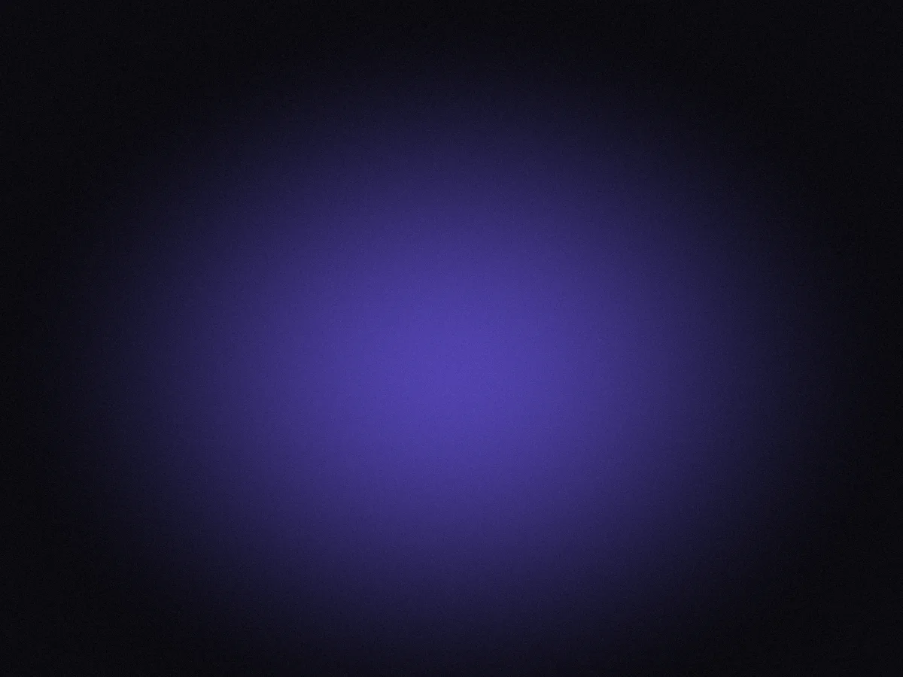
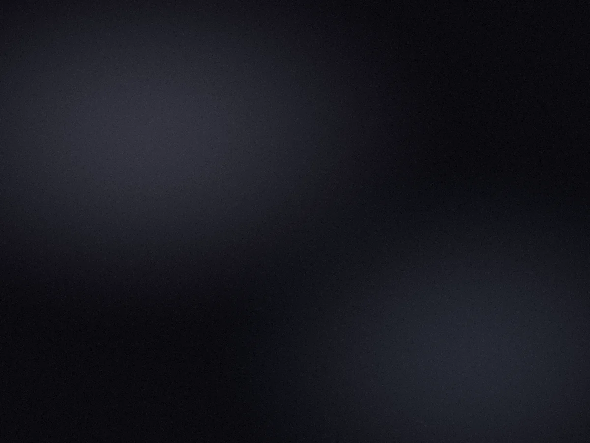

Nove rices
Visuais completos, do escuro com vidro ao claro como papel. Troca em um clique.

Um Linux bonito, leve e seguro, pronto no primeiro boot.
NullyzOS é um sistema operacional baseado em Arch Linux. Na instalação você escolhe o desktop, Hyprland ou KDE Plasma, e o visual. Depois troca quando quiser: cores, barra, cantos e terminal mudam juntos, e um clique desfaz.
Tudo vem configurado em português: Wi-Fi, Bluetooth, som, impressora, atualizações. Os pacotes são assinados, o firewall já vem ligado e o sistema guarda um snapshot antes de cada mudança.

Visuais completos, do escuro com vidro ao claro como papel. Troca em um clique.

A paleta do sistema inteiro sai da sua imagem de fundo, e acompanha quando ela muda.

Janelas lado a lado e tudo pelo teclado, ou o Plasma completo e familiar.

Snapshot antes de cada atualização e de cada rice. Se algo quebrar, volta pelo menu do boot.

Firewall ligado, pacotes assinados, sem AUR, kernel e rede endurecidos.

De memória com o Hyprland logo após o login. Sobra para o que você abrir.
Grátis, sem cadastro. A ISO tem cerca de 1,7 GB e vem assinada.
Pelo GitHub do projeto, junto com a soma SHA256 e a assinatura GPG.
Uma linha confere que o arquivo é o original. Grave num pendrive de 8 GB com Rufus, Ventoy ou Fedora Media Writer.
sha256sum -c SHA256SUMSLigue pelo pendrive. O instalador abre sozinho e mostra cada desktop e cada visual antes de você escolher.
64 bits · 4 GB de RAM · 30 GB de disco · UEFI ou BIOS. Chave GPG C43C 292B 0901 FB84 D4A1 A174 3682 8706 C86F B94A.